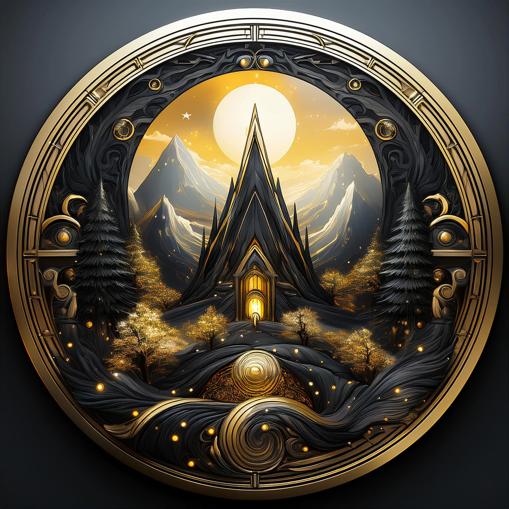
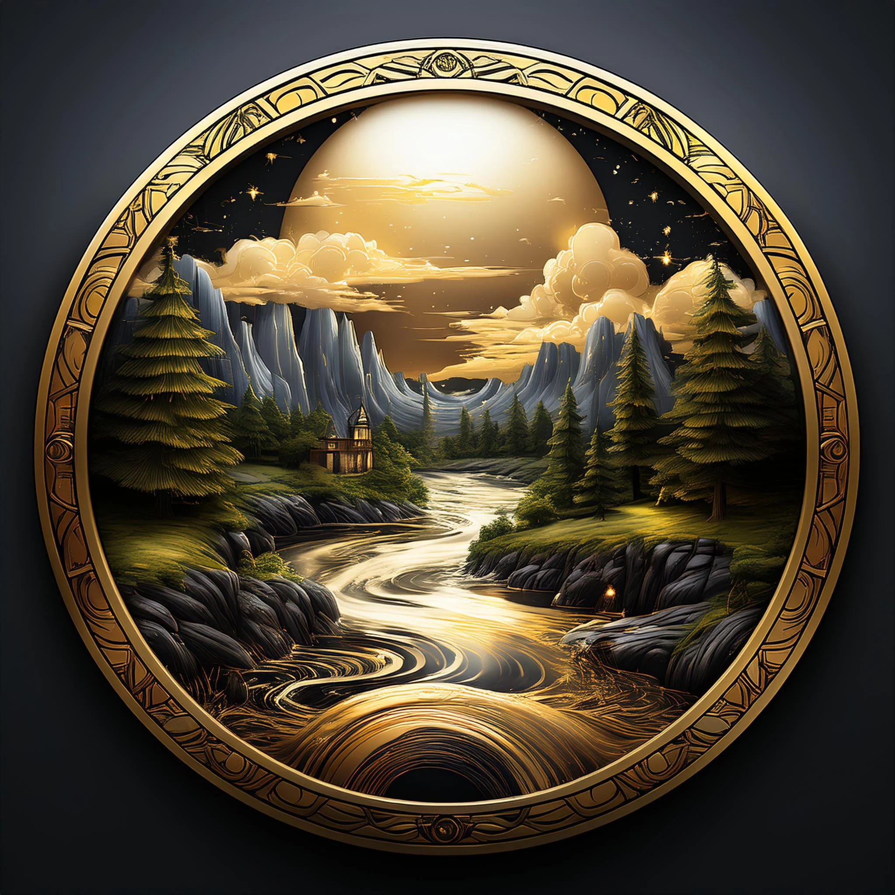
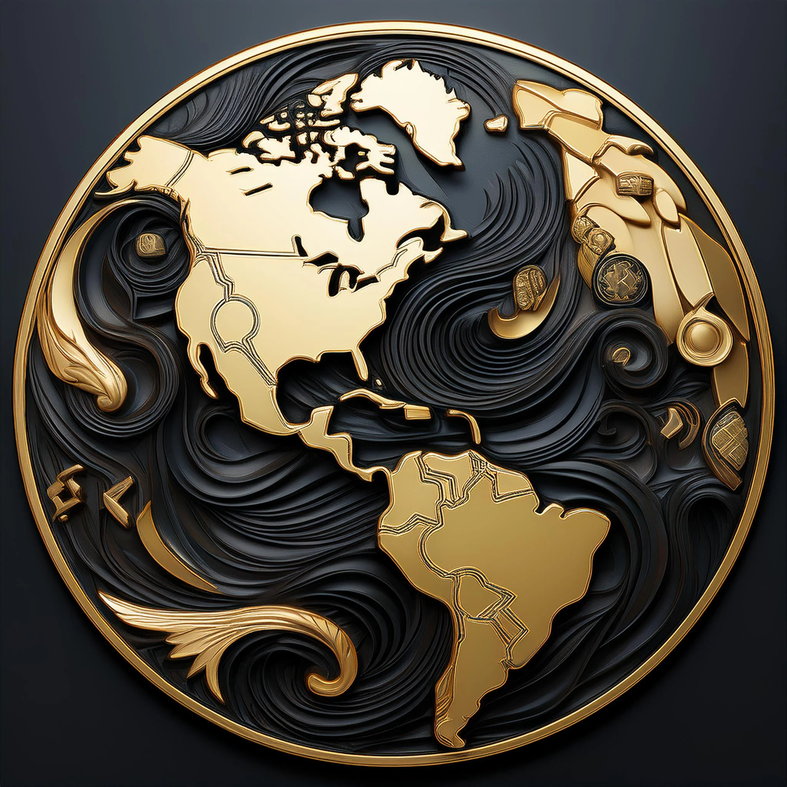
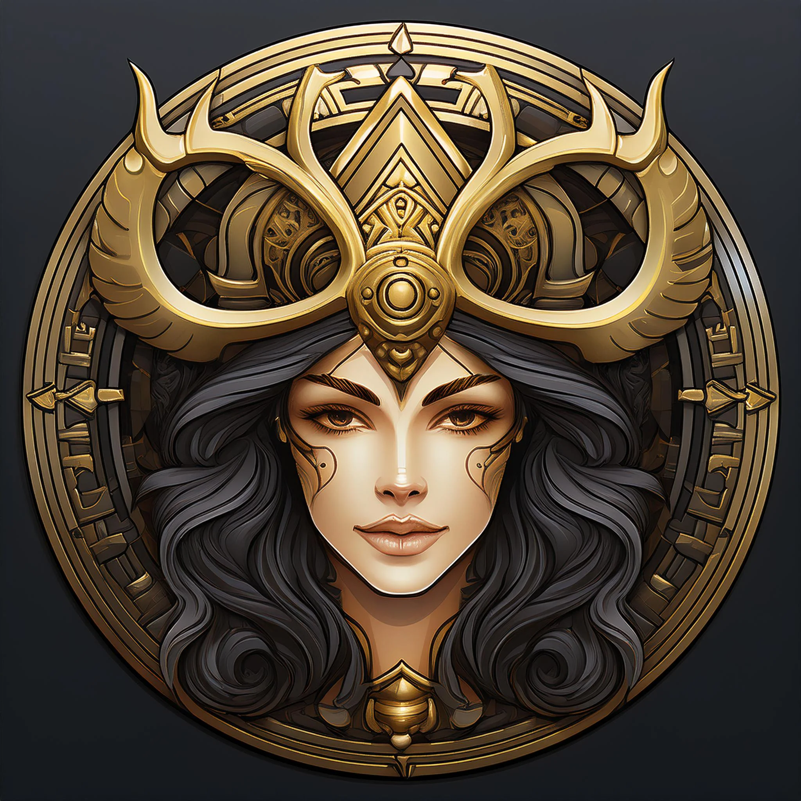
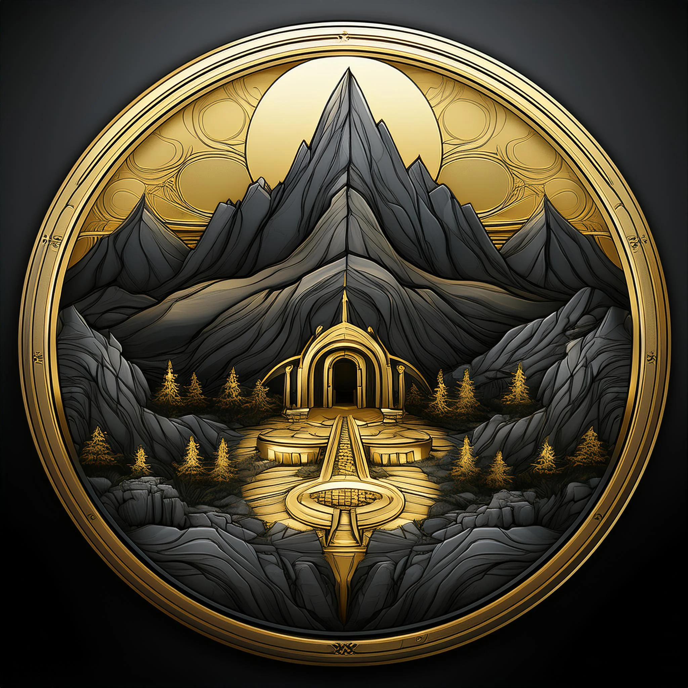
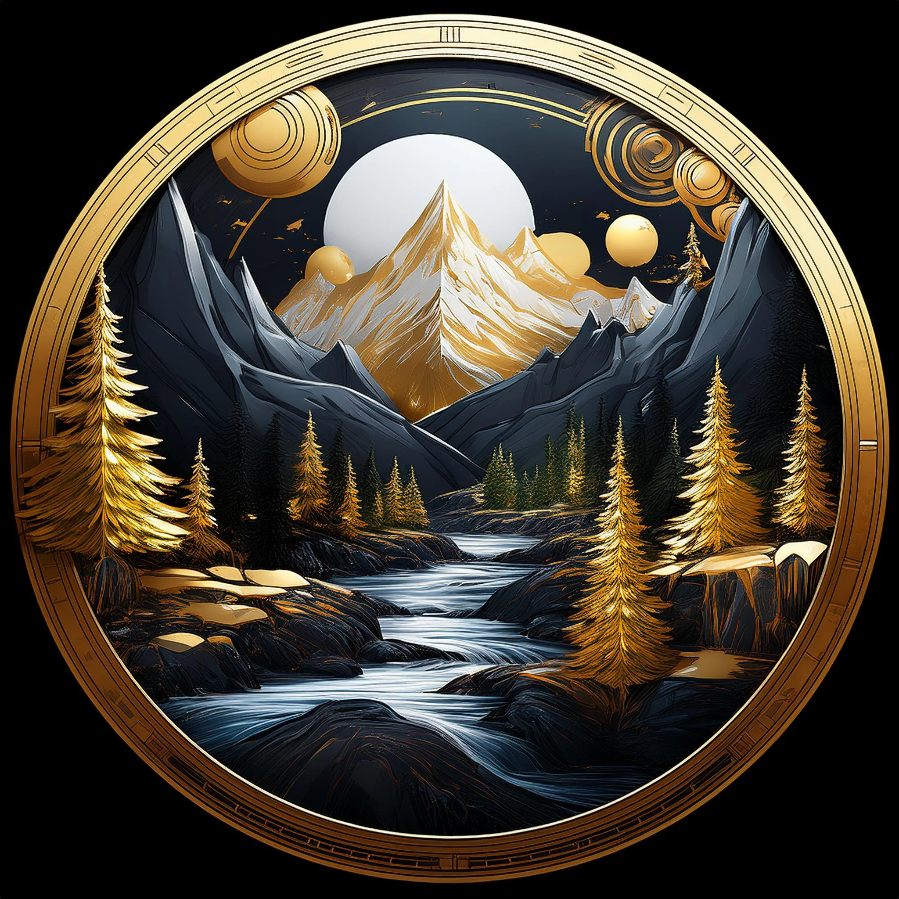
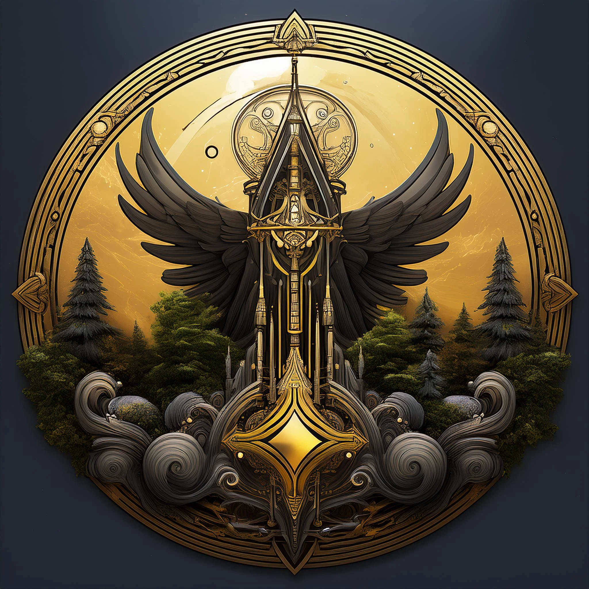
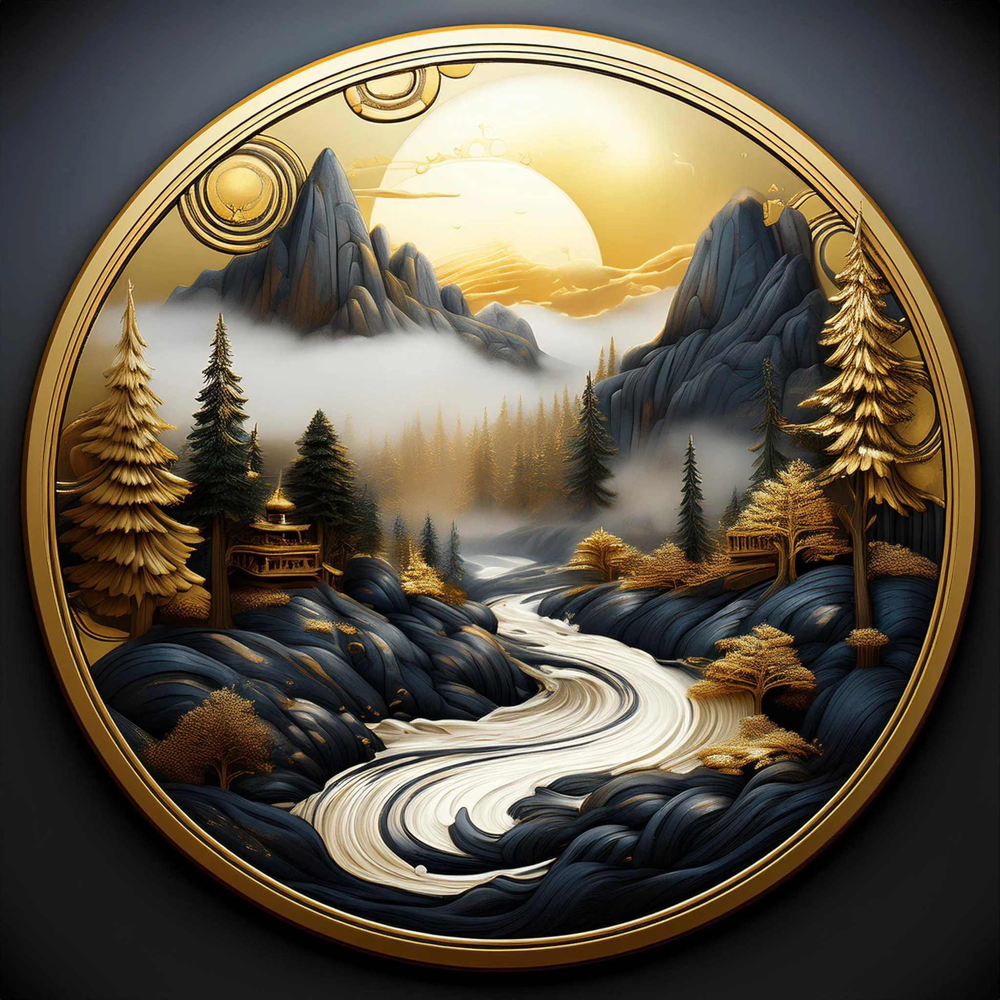

YMIR
In the timeless void of Ginnungagap, frost from the icy realm of Niflheim met the searing flames of Muspellheim. From the melting ice emerged Ymir, a towering figure born of chaos. Ymir slept, and from his armpits and legs sprang other giants, representing the unbridled forces of nature. Ymir’s existence was unruly, his presence a threat to the ordered cosmos yet to come.
Nearby, the great cow Audhumla appeared, licking the salty ice. From the ice emerged Búri, the first of the gods, who begot Borr, father to Odin, Vili, and Ve. Recognizing Ymir’s uncontrollable power, the three brothers plotted to end his reign. In a titanic battle, they slew Ymir, whose blood gushed out to drown most of his giant offspring.
From Ymir’s body, the gods created the world:
His skull became the sky, where stars were fixed.
His flesh formed the land.
His blood created the oceans, and his teeth and bones became mountains and cliffs.
His eyelashes were fashioned into the walls of Midgard, the world of humans.
Yet Ymir’s kin, the surviving jötnar, fled to Jötunheim and bore an everlasting grudge, sowing the seeds of conflict between gods and giants.
ODIN
Odin, chief of the Æsir, was defined by his relentless pursuit of knowledge and power. Early in his reign, Odin sought the wisdom of Mímir, guardian of the well beneath Yggdrasil. To drink from its waters, Odin offered one of his eyes. The sacrifice left him with unmatched insight into the workings of the cosmos, though he was forever marked by the price of knowledge.
Later, Odin sought mastery of runes, magical symbols holding the secrets of creation, destiny, and power. To attain them, he performed a greater sacrifice: he pierced himself with his spear, Gungnir, and hung from Yggdrasil’s branches for nine nights and nine days, teetering on the edge of life and death. As he hung, the tree whispered its secrets, and Odin grasped the runes, becoming the god of magic, poetry, and prophecy.
But even Odin’s knowledge brought sorrow. Through his visions, he foresaw the events of Ragnarök, where he would fall to Fenrir, Loki’s monstrous wolf-son. Knowing his fate, Odin tirelessly prepared for the end, assembling the Einherjar (warriors chosen from the slain) and plotting strategies to delay the inevitable.
THOR
Thor, son of Odin and the earth goddess Jörð, embodied strength and protection. With his hammer Mjölnir, Thor waged unceasing war against the jötnar, who threatened the stability of the realms. Yet Thor was not just a warrior—he was also a protector of Midgard and a symbol of unyielding determination.
One of Thor’s greatest trials involved the Utgard-Loki, a giant who tricked him through illusions. Thor was challenged to drink from a horn, unaware it was connected to the sea; his efforts created the tides. He tried to lift a massive cat, not realizing it was Jörmungandr, the World Serpent in disguise. Lastly, he wrestled an old crone who was Elli, the personification of old age, and found her unbeatable. These tests taught Thor humility, though they also foreshadowed his final battle with Jörmungandr at Ragnarök.
Another famous tale recounts the theft of Mjölnir by Thrym, who demanded Freyja as his bride. Disguised as Freyja, Thor infiltrated the giant’s hall, and when Mjölnir was brought to bless the marriage, Thor seized it and unleashed his fury, slaying Thrym and restoring his hammer to protect the worlds.
TYR
Tyr was revered for his unwavering commitment to law and sacrifice. In the age of prophecy, the gods learned that Loki’s son, Fenrir, would grow to devour Odin during Ragnarök. They sought to bind the wolf, first with chains of iron, which Fenrir easily shattered. Finally, they commissioned the dwarves to forge Gleipnir, a silken ribbon imbued with impossible elements: the roots of a mountain, the beard of a woman, the sound of a cat’s footsteps, and the breath of a fish.
Fenrir, sensing trickery, agreed to be bound only if one god placed their hand in his mouth. Tyr, knowing the cost, stepped forward. As the ribbon tightened, Fenrir thrashed and bit off Tyr’s hand, leaving the god maimed. Though Tyr bore the loss stoically, his act ensured Fenrir’s restraint until Ragnarök, when the wolf would break free.
Tyr’s sacrifice embodied the ideals of honor and justice, showing that the preservation of order often demands personal loss.
ANGRABODA
Angrboða, a fearsome jötunn from Jötunheim, lived apart from the gods, shrouded in mystery and power. Her union with Loki resulted in three fateful children:
Fenrir, the wolf destined to kill Odin.
Jörmungandr, the serpent who encircles the world and battles Thor.
Hel, the somber ruler of the underworld.
The gods, fearing the prophecy of Ragnarök, acted swiftly. They bound Fenrir with Gleipnir, cast Jörmungandr into the ocean, and banished Hel to Niflheim, granting her dominion over the dead. Angrboða, devastated by the loss of her children, became an enduring symbol of grief and vengeance.
Her prophetic abilities shaped the course of events, and her children fulfilled their roles during Ragnarök, fulfilling her warnings to the gods.
FREYJA
Freyja, goddess of love and war, was also a practitioner of seiðr, a form of magic dealing with fate and transformation. She taught this craft to Odin, making it a central aspect of Norse mysticism. Freyja’s beauty captivated gods and mortals alike, but it was her necklace, Brísingamen, that symbolized her power.
When Freyja sought to acquire the necklace, she encountered four dwarves who demanded she spend a night with each of them in exchange. Freyja agreed, valuing the treasure above all else. The necklace became her most prized possession, a symbol of her dual nature as a goddess of love and fierce independence.
As a leader of the Valkyries, Freyja claimed half the warriors who died in battle, welcoming them to her hall, Fólkvangr. Freyja’s domain over life, death, and magic made her one of the most complex deities in Norse mythology.
FREYR
Freyr, the twin brother of Freyja, was a god of abundance and peace, revered for bringing prosperity to the land. One day, Freyr spied Gerðr, a beautiful jötunn, and fell deeply in love. Overcome with desire, he sent his servant Skírnir to woo her. Skírnir used both threats and promises, eventually convincing Gerðr to marry Freyr.
To secure Gerðr’s hand, Freyr gave away his magical sword, which could fight on its own. This sacrifice ensured Freyr’s happiness but left him vulnerable. During Ragnarök, Freyr faced the fire giant Surtr without his weapon and was slain, a symbol of the price of love and peace.
Freyr’s story embodies the balance between passion and responsibility, as well as the sacrifices required to sustain harmony in a turbulent world.
YGGDRASSIL
The Nine Realms
Asgard
The celestial home of the Aesir gods, ruled by Odin.
It is a realm of divine governance, order, and power, connected to Midgard by the rainbow bridge, Bifrost.
Asgard represents strength and wisdom, often depicted as a majestic, fortified city.
Alfheim
The ethereal realm of the light elves, beings of beauty and magic.
Known for their wisdom and benevolence, the elves maintain harmony in the cosmos.
Alfheim is often depicted as a luminous, verdant paradise filled with otherworldly light and enchantment.
Muspelheim

The fiery realm ruled by the fire giant Surtr.
It is a land of molten lava, flames, and scorching heat, representing destruction and chaos.
Muspelheim is destined to play a pivotal role in Ragnarok, the prophesied end of the world.
Midgard
The world of humans, located at the center of Yggdrasil, the great world tree.
Protected by the gods, it serves as the bridge between the divine and mortal realms.
Surrounded by an impassable ocean, it is the heart of human existence in Norse mythology.
Vanaheim
The home of the Vanir gods, associated with fertility, nature, and wealth.
Peaceful and harmonious, it contrasts with Asgard’s warrior ethos.
After the Aesir-Vanir war, the two pantheons formed a truce, with Vanaheim embodying a balance of prosperity and serenity.
Nidavellir
The underground home of the dwarves, master craftsmen and artisans who forge the gods' most powerful artifacts, including Thor's hammer, Mjölnir.
Nidavellir is depicted as a dark, labyrinthine realm filled with glowing forges, embodying ingenuity, craftsmanship, and the transformative power of fire and metal.
Jotunheimr
The untamed land of the giants, or Jotnar, who often rival the gods.
It is a harsh, rocky realm with dense forests and icy peaks, symbolizing chaos and primordial nature. The giants represent ancient forces, challenging the order of Asgard.
Helheim
The shadowy underworld ruled by Hel, daughter of Loki.
It is a realm for those who die of old age or illness, distinct from Valhalla.
Helheim is a somber place of rest, embodying the inevitability of death and the quiet end of mortal life.
Niflheim
A primordial realm of ice, fog, and eternal cold.
It is one of the first worlds to form in Norse mythology and the source of icy rivers.
Overlapping with Helheim, it is a land of death, symbolizing desolation and the origins of life itself.